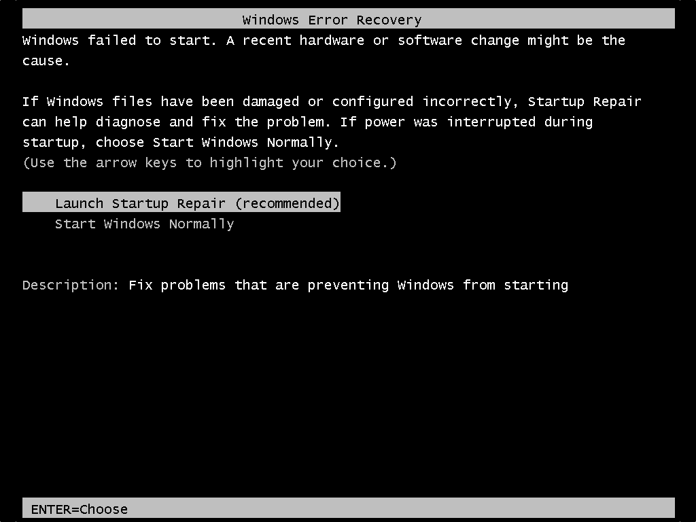

Sistema operacional corrompido
O problema
Um sistema operacional corrompido é aquele em que arquivos essenciais foram danificados ou apagados, fazendo com que o computador não consiga iniciar ou funcione de forma instável. Os sintomas mais frequentes são mensagens como "Missing Operating System" ou "BOOTMGR is missing" ao ligar, a tela azul (BSOD), programas que param de funcionar e, no Linux, o computador parando no terminal do initramfs.
Possíveis causas
Desligamento incorreto ou queda de energia enquanto arquivos estavam sendo gravados, atualizações interrompidas, malware e, principalmente em máquinas antigas, setores defeituosos (partes danificadas da superfície do HD, que não guardam mais dados). Em computadores antigos o problema é mais comum, pois o HD já está desgastado, a fonte de alimentação pode estar fraca e o sistema passou anos sem manutenção.

Solução no Windows
Inicie pelo pendrive de instalação e use a opção Reparo de Inicialização. Se não resolver, no Prompt de
Comando das opções de recuperação, os comandos bootrec /fixmbr, bootrec /fixboot
e bootrec /rebuildbcd recuperam a inicialização. Com o Windows funcionando, o comando
sfc /scannow repara os arquivos do sistema e chkdsk C: /f /r marca os setores
defeituosos para que não sejam mais usados.
Para verificar a saúde do disco, use o programa CrystalDiskInfo, que lê os dados S.M.A.R.T. (o autodiagnóstico que o próprio HD ou SSD faz).
Solução no Linux
No terminal do initramfs ou a partir de um pendrive do Ubuntu, execute fsck -y /dev/sda2
(trocando sda2 pela partição do sistema) para verificar e corrigir o sistema de arquivos. Com o sistema
iniciado, sudo dpkg --configure -a termina a instalação de pacotes que ficaram pela metade e
sudo apt install --fix-broken corrige dependências quebradas.
A saúde do disco é verificada com sudo smartctl -a /dev/sda (pacote smartmontools) ou pelo
programa Discos, na opção Dados e testes SMART.
Quando nada funciona
Salve os arquivos importantes (iniciando por um pendrive com Linux, se o sistema não abrir) e reinstale o sistema operacional. Antes disso, confira se o HD está saudável: se ele estiver com defeito, o problema volta a acontecer e é necessário trocá-lo. Barulhos de clique vindos do gabinete também indicam HD com falha. Veja também Loop de reparo automático.